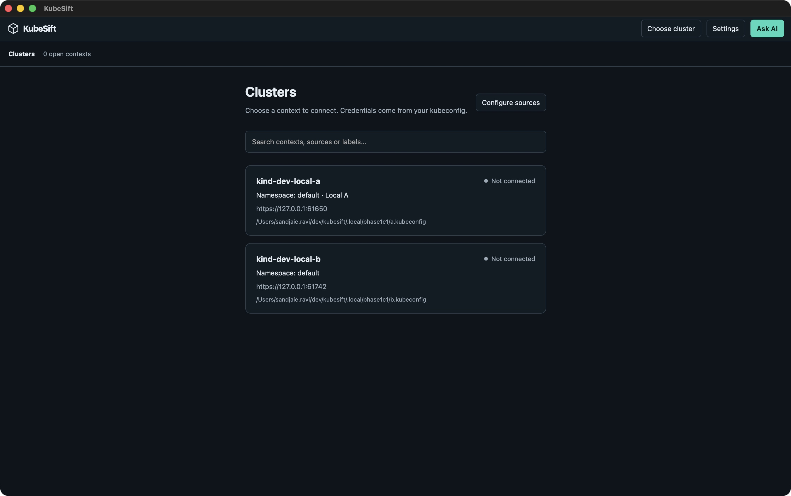
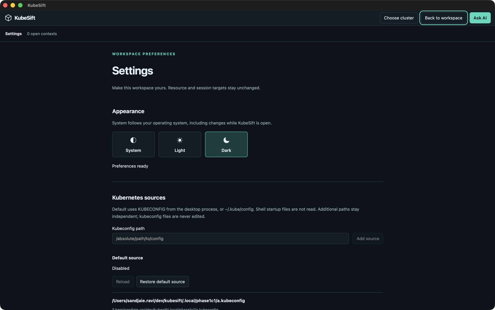
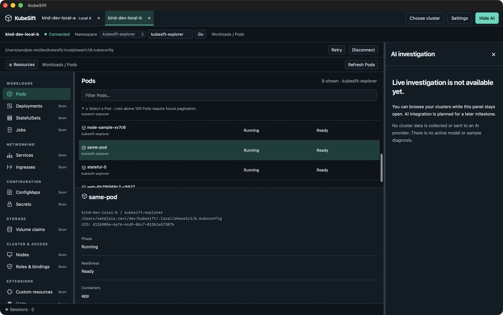
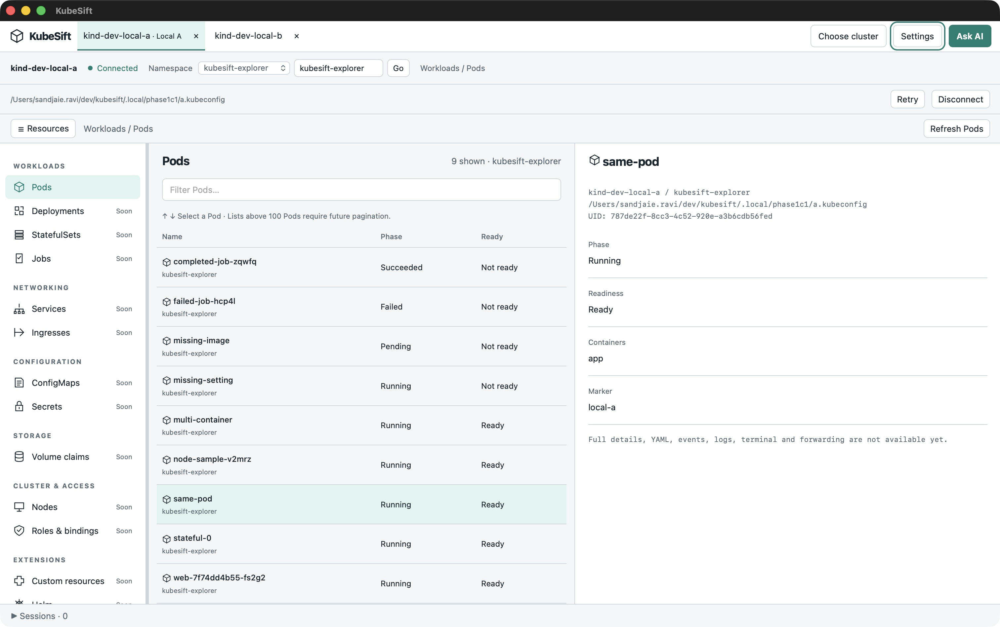

Implementation ready for user UAT; merge gate pending. PR #3 targets develop. Phase 1C.1 implements live cluster entry, independent kubeconfig sources, truthful connection evidence and basic namespace/Pod browsing. The PR must remain unmerged until the user accepts the UI UAT checklist. No Phase 1C.2 work or release is included.
Build and provenance
Validated 11 November 2026 on macOS 26.7.1 (25G241), arm64. Branch feature/phase-1c1-cluster-connections starts at
develop 4ef7a9b, including approved planning commit 5e2b73d. Final application code: e23c02e;
later commits contain documentation/evidence only. No worktree or rebase.
Actual tools: Go 1.27.3, Wails CLI/module 3.1.0, Node 25.1.0 and npm 11.6.2. This run used the installed Node version; it does not
claim the documented Node 26.13.0 baseline was exercised. Local ad-hoc signed app: bin/kubesift.app, Finder launched
after the final build. Executable SHA-256: 5939c05d382e8489c97fb257f9ebbbb192da478873751504417bd58188d65000. Signature
integrity check passed; notarization/distribution readiness was not tested.
Actual verification
-
scripts/check.sh: source descriptions, documentation links, Go formatting/tests/vet, frontend tests (7 tests), ESLint and TypeScript passed. An earlier run stopped at a development HTML script link; the relative link was corrected before the passing run. -
go test -race ./internal/explorer ./internal/sources ./internal/connection: passed; connection package has no direct test files. -
KUBESIFT_EXPLORER_INTEGRATION=1 KUBESIFT_EXPLORER_CONFIG_DIR="$PWD/.local/phase1c1" go test -tags integration ./tests/integration -run TestExplorerConnections -count=1: passed against only kind-dev-local-a and kind-dev-local-b, including restricted namespaced reads. The opt-in guard was also exercised without enabling the scenario. -
scripts/dev-clusters.sh --explorer: applied twice successfully with ownership collision checks. Fixture configuration and short-lived credentials remain ignored locally; no credential bodies are in this report. -
wails3 task package: passed. Production asset inspection found no ValidationApp, runProfile, createPreviewInventory or simulated-action entry. Development validation remains isolated in Vite's separate development page. -
codesign --verify --deep --strict bin/kubesift.app: passed. Native Finder walkthrough used the resulting bundle, not a Vite browser preview.
Acceptance evidence
| Criterion | Agent result | Evidence and qualification |
|---|---|---|
| C11 · Product entry | Pass, qualified | Finder launch of final package: zero open contexts, searchable source list and visible missing-source error. No product preview/validation navigation. Code inspection confirms startup only reads summaries; no packet-capture claim. |
| C12 · Settings | Pass | Native add independent A/B files, missing-file isolation, reload, label save, removal Cancel and Confirm. Source store tests cover strict parsing, independent snapshots, label invalidation and file preservation. Appearance persisted across relaunch. |
| C13 · Explicit connection | Pass | Native A/B tabs show real namespace Pods and distinct same-pod markers/UIDs. Switching and Settings return preserve targets. Opt-in live test repeats A/B isolation; deferred-response and epoch regressions reject stale ownership. |
| C14 · Auth and trust | Automated pass; native helper UAT unrun | Existing guard tests protect approval, changed helper and execution boundaries. Synthetic TLS server rejects an old token; external file renewal plus Retry creates a new generation. No cloud-provider or packaged helper approval/revocation compatibility claim. |
| C15 · Honest failures | Automated/live pass; native fault injection unrun | Typed 401/403/TLS/network/deadline categories tested. Local least-privilege identity cannot list namespaces/default Pods but succeeds in kubesift-explorer. Fake clock ages success past 90 seconds; Pod403 preserves another successful probe and its namespace. |
| C16 · UI | Agent walkthrough passed; user approval pending | Light/Dark, keyboard row selection, command input guards, Settings return and Ask AI/Hide AI observed. Existing 1100×700 window and screen-sized 1512×949 content capture exercised on this Mac. No exhaustive monitor/OS testing. |
| C17 · Cleanup/isolation | Automated pass; native exit observed | Cancellation barriers, replacement generations, source removal and race checks pass. Native final-tab close returns to list; app process exits and relaunch starts empty. No new long-duration memory/session-load measurements; Phase 1A qualifications remain. |
| C18 · Fixtures/boundaries | Pass | 26 owned manifest objects per cluster, including namespace and CRD; nine resulting Pods each at validation. Existing shop/billing preserved. Only designated kind contexts contacted. Other resource destinations remain unavailable; no simulated operations, login or AI traffic. |
Independent review resolutions
A fresh read-only correctness/hygiene review covered 4ef7a9b..566e7e4. Five Important findings were accepted and fixed
in e23c02e, with focused failing regressions followed by passing checks. No minor hygiene findings were reported.
Detailed review and execution logs stay ignored locally.
- KSF-001: hashing rest.Config silently failed on function fields. Identity now hashes explicit serializable context configuration and loaded TLS data, with errors handled; changed endpoint/token is detected.
- KSF-002: manual Pod403 replaced successful connection evidence. Resource errors now remain local to the view; periodic checks retain the previously successful resource path and namespace.
- KSF-003: opening a second same-source context cancelled an unchanged pending first context. Implicit refresh preserves unchanged attempts; explicit reload or changed identity invalidates them.
- KSF-004: open-tab environment labels stayed stale after source identity changes. Catalog refresh and Retry reconcile tab metadata while preserving namespace/filter state.
- KSF-005: close/reopen could cancel an attempt adopted by the replacement tab. Same-context Start/cancel operations now settle in order; different contexts remain independent.
Plan ruling: source metadata persistence occurs under the coordinator lock before cancellation. A failed write leaves existing tabs intact; successful persistence is immediately followed by cancellation before lock release. This avoids claiming removal after a failed save.
Curated UI evidence
Final packaged build, local-only source paths and fixture data. Default loading was temporarily disabled to keep unrelated local context names out of screenshots. Temporary source metadata was removed afterward, default source and original Light appearance restored, and the app exited. These are agent observations, not user acceptance. See the screenshot manifest.




Limits and next acceptance
- Product resource browsing covers namespaces and basic Pods only: phase, readiness, containers, UID and fixture marker. Detailed failure reasons, YAML, events, logs and operations remain later increments. A crash-looping Pod can show Kubernetes phase Running with Not ready.
- Namespace discovery is one bounded page with manual entry when incomplete. Pod lists above 100 return a capacity explanation; pagination is not implemented. Source/context/connection bounds are visible product limits.
- Users authenticate externally. No EKS/AKS/GKE/OpenShift login compatibility, packaged helper fault injection, external-monitor matrix or accessibility certification is claimed. Optional UAT cases require safe prepared fixtures or a Blocked result.
- AI is an availability panel only. No provider, sample diagnosis or cluster-data transmission. Existing domain/session guards remain; Phase 1A backgrounded WebKit log-loss qualification is carried forward.
- Packaged application menu still uses the inherited “My Product” label. Signing/notarization/updater and release readiness remain open.
- Checklist HTML structure and links were checked. Browser/print preview was not exercised: no Chrome surface was available, and the in-app browser policy blocked local file URLs. Open the HTML locally in your browser for UAT.
- User UAT results are all Not tested. Complete the linked form and print/save it before closing; the form does not persist results. The PR remains open and unmerged pending that acceptance.
See fixture setup, Phase 1A qualifications and approved implementation plan.